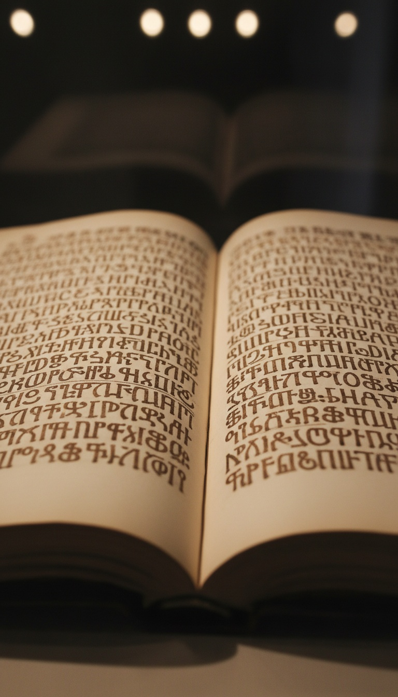

One book names every single one of the two hundred who came down. The Council of Laodicea removed it from your Bible in 363 AD, and the Western church did not recover the complete text for fourteen hundred years after that.
The Book of Enoch was circulating in Jewish synagogues no later than 300 BC. The apostle Jude quoted it by name in the New Testament. Eleven separate Aramaic manuscript fragments of it came out of Cave 4 at Qumran. The church that met at Laodicea knew all of this. They still cut it.

The Apostle Who Cited the Removed Book
Jude 1:14-15 is still in your Bible. "Enoch, the seventh from Adam, prophesied about them: See, the Lord is coming with thousands upon thousands of his holy ones." That is a direct citation. Not an allusion, not a paraphrase. The New Testament author named Enoch as a prophet and pulled his exact text into scripture. That citation never got removed. The source text did.
Tertullian, writing around 200 AD, defended the Book of Enoch as authentic scripture in his treatise On the Apparel of Women. Origen of Alexandria cited it. Clement of Alexandria referenced it. These men built the theological architecture of the early church. All three treated Enoch as real scripture. The book was not fringe material when it was cut. It was load-bearing.
Genesis 6:2 survived the canon cut: "The sons of God saw that the daughters of humans were beautiful, and they married any of them they chose." Two verses. The two hundred pages of detail that gave those verses their meaning were removed. Jude 1:6 survived as well: "And the angels who did not keep their positions of authority but abandoned their proper dwelling." Both arrows stayed in the Bible. The target was removed.
The Mountain and the Oath
The Book of Enoch chapter 6 opens with the descent. Two hundred beings called the Watchers looked down at human women and decided to act. Their leader was Semjaza. He called the group to a formal oath before they crossed: "Let us all swear an oath, and all bind ourselves by mutual imprecations not to abandon this plan but to do this thing." They took the oath together. Then they descended on the summit of Mount Hermon.
Mount Hermon sits at 2,814 meters on the modern border of Syria and Lebanon. The name derives from the Hebrew root cherem, meaning a thing set apart under oath, dedicated, devoted. The Watchers named the mountain after the pact they sealed on it. Chapter 6 then lists every name beyond Semjaza: Azazel, Armaros, Baraqel, Kokabel, Tamiel, Ramiel, Danel, Ezeqeel, Baraqijal, Asael, Batariel, Ananel, Zaqiel, Samsapeel, Satarel, Turel, Jomjael, Sariel. Each name has a chapter. Each chapter has a function.
They did not cut Enoch because it was false. They cut it because it named who Azazel was, what he taught, and why the Flood came.
The Curriculum in Chapter 8
Chapter 8 of 1 Enoch is a transmission record with full attribution. Azazel taught men to make swords, knives, shields, and breastplates. He taught the working of metals and their properties. He taught women the art of ornament, the use of antimony for darkening the eyes, and the knowledge of seduction. One being. One curriculum. Named and delivered.
Semjaza taught enchantments and root-cutting. Armaros taught the resolving of enchantments. Baraqijal taught astrology. Kokabel taught the positions of the stars. Ezeqeel taught the knowledge of the clouds. The chapter distributes specific disciplines across specific named beings. It reads as a faculty list.
Mesopotamian sources record the same transmission from a different angle. The Apkallu tablets from ancient Sumer describe seven divine sages who appeared before the Flood and gave humanity writing, science, and agriculture. The Babylonian historian Berossus, writing in the 3rd century BC, recorded the Oannes tradition: a being who emerged from the sea and taught humans every art of civilization in a single season. The Enoch text and the Sumerian record describe the same window. They disagree only on the number of teachers.
Canon 60 and What It Did Not Say
The Council of Laodicea met in 363 AD and produced Canon 60: a list of approved Old Testament books. Enoch is absent. The council produced no written debate about the text's contents. No preserved proceedings call it fraudulent. No bishop's letter survives condemning it as heresy. They produced a list. Enoch was not on it. That is the entire public record of the decision.
The complete Latin manuscript tradition for Enoch ended sometime in the early medieval period. A text cited by New Testament authors, confirmed at Qumran in eleven separate manuscript copies, and defended in writing by Tertullian, Origen, and Clement of Alexandria disappeared from Western Christianity within a few centuries of that list. Texts do not vanish from a manuscript culture by accident. A monastery that held Enoch would have copied it forward. The copying stopped.
The Church That Refused the Ruling
The Ethiopian Orthodox Tewahedo Church never accepted the Council of Laodicea's decision. The Book of Enoch sits in their biblical canon today in Ge'ez, the ancient liturgical language of the church. The only complete version of 1 Enoch that survived to the modern era is the Ge'ez version. Every other complete text is a translation derived from it.
James Bruce, a Scottish explorer, carried three Ge'ez manuscripts of Enoch back to Europe in 1773 after his expedition to find the source of the Blue Nile. He found the river. The manuscripts were the more significant cargo. Richard Laurence, Regius Professor of Hebrew at Oxford University, published the first complete English translation in 1821. Europe had been without the full text for roughly fourteen centuries. One church in East Africa held it through all of it.
What Qumran Preserved
Cave 4 at Qumran yielded eleven separate Aramaic manuscript fragments of 1 Enoch. That is more manuscript copies of Enoch recovered at a single site than copies of most books that remained in the final Western canon. The Dead Sea community copied and preserved Enoch across multiple manuscripts in multiple hands over multiple generations. The Shrine of the Book at the Israel Museum in Jerusalem holds those fragments today.
Qumran also produced the Book of Giants, a related text that extends the Watcher narrative and names the Nephilim individually. It describes their experiences as the Flood approaches. Both texts in the same archive. The Dead Sea community was not inventing heterodox material. They were preserving what the tradition handed them, and what they handed down was a specific account of who came down, what they brought, and what it cost.
The Qumran fragments are in Jerusalem at the Shrine of the Book. The Ge'ez manuscripts are in Addis Ababa at the Institute of Ethiopian Studies. The 1821 Laurence translation is in public domain. The text is not hidden. The question the text raises is what survived the Flood carrying the Watcher curriculum forward. Chapter 15 explains why the spirits of the Nephilim became demons. Chapter 16 explains what they were told. Neither chapter ended up in the Western Bible. Both are in the Ge'ez version, where they have always been.
The Western church left the arrows in. Jude 1:6 is still there. Genesis 6:2 is still there. Both point at the same material. The council in 363 AD did not fabricate new theology. They performed a precise surgery: they removed the source document while leaving its citations intact. A forgery gets destroyed. A dangerous text gets separated from its citations and allowed to disappear quietly. Enoch disappeared quietly for fourteen hundred years. Ethiopia kept the operating manual. Drop your reading and your theory below.
Before you go
7 books the Vatican doesn't want you reading. Free PDF — the texts they cut, with sources. Joined by 140+ Inner Circle members.
No spam. Unsubscribe anytime.
Go deeper
The Hidden Canon, Vol. I — Enoch. Jubilees. Thomas. Mary. Judas. 90 pages, 14 chapters, every receipt cited. The books your Bible quietly removed.
Read the Canon →Books that informed this investigation
As an Amazon Associate, Hidden Epoch earns from qualifying purchases. Cost to you: nothing.
Research safely
The VPN we use to research without being tracked. First 3 months free.
Get NordVPN →